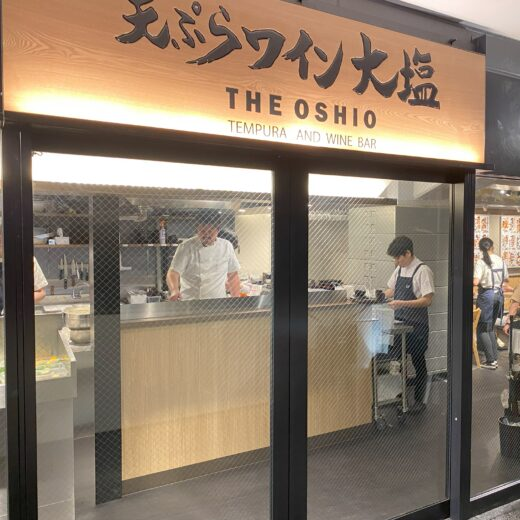

 Tokyo Area
Tokyo Area
Hibiya
Seasonal Highlights at Hibiya
 Oden Goshumori (Five-Variety Oden Platter)¥1,100
Oden Goshumori (Five-Variety Oden Platter)¥1,100 Nihon no Yuzu Ale (Japanese Yuzu Ale)¥1,000
Nihon no Yuzu Ale (Japanese Yuzu Ale)¥1,000 Shinshu Koshu 2026 Glass¥759
Shinshu Koshu 2026 Glass¥759 Shinshu Koshu 2026 Bottle¥5,390
Shinshu Koshu 2026 Bottle¥5,390 Shinshu Muscat Bailey A Rosé 2026 Glass¥759
Shinshu Muscat Bailey A Rosé 2026 Glass¥759 Hokusetsu Junmai Ginjo Cold Sake Glass¥759
Hokusetsu Junmai Ginjo Cold Sake Glass¥759 Gekkeikan Tsune no Tsuki Atsukan (Hot Sake) 1 Go¥759
Gekkeikan Tsune no Tsuki Atsukan (Hot Sake) 1 Go¥759 Kuroge Wagyu to Kinoko no Aki Kaoru Marine (Marinated Kuroge Wagyu & Autumn Mushrooms)¥1,320
Kuroge Wagyu to Kinoko no Aki Kaoru Marine (Marinated Kuroge Wagyu & Autumn Mushrooms)¥1,320 Katsuo no Shio Tataki (Salt-Seared Bonito)¥1,089
Katsuo no Shio Tataki (Salt-Seared Bonito)¥1,089 Sawara Aburi Sashimi (Seared Spanish Mackerel Sashimi)¥1,089
Sawara Aburi Sashimi (Seared Spanish Mackerel Sashimi)¥1,089 Goma-dare Madai (Sea Bream with Sesame Sauce)¥979
Goma-dare Madai (Sea Bream with Sesame Sauce)¥979 Gyusuji Parmigiano (Braised Beef Tendon with Parmigiano)¥979Oden Goshumori (Five-Variety Oden Platter)¥1,100Nihon no Yuzu Ale (Japanese Yuzu Ale)¥1,000Shinshu Koshu 2026 Glass¥759Shinshu Koshu 2026 Bottle¥5,390Shinshu Muscat Bailey A Rosé 2026 Glass¥759Hokusetsu Junmai Ginjo Cold Sake Glass¥759Gekkeikan Tsune no Tsuki Atsukan (Hot Sake) 1 Go¥759Kuroge Wagyu to Kinoko no Aki Kaoru Marine (Marinated Kuroge Wagyu & Autumn Mushrooms)¥1,320Katsuo no Shio Tataki (Salt-Seared Bonito)¥1,089Sawara Aburi Sashimi (Seared Spanish Mackerel Sashimi)¥1,089Goma-dare Madai (Sea Bream with Sesame Sauce)¥979Gyusuji Parmigiano (Braised Beef Tendon with Parmigiano)¥979
Gyusuji Parmigiano (Braised Beef Tendon with Parmigiano)¥979Oden Goshumori (Five-Variety Oden Platter)¥1,100Nihon no Yuzu Ale (Japanese Yuzu Ale)¥1,000Shinshu Koshu 2026 Glass¥759Shinshu Koshu 2026 Bottle¥5,390Shinshu Muscat Bailey A Rosé 2026 Glass¥759Hokusetsu Junmai Ginjo Cold Sake Glass¥759Gekkeikan Tsune no Tsuki Atsukan (Hot Sake) 1 Go¥759Kuroge Wagyu to Kinoko no Aki Kaoru Marine (Marinated Kuroge Wagyu & Autumn Mushrooms)¥1,320Katsuo no Shio Tataki (Salt-Seared Bonito)¥1,089Sawara Aburi Sashimi (Seared Spanish Mackerel Sashimi)¥1,089Goma-dare Madai (Sea Bream with Sesame Sauce)¥979Gyusuji Parmigiano (Braised Beef Tendon with Parmigiano)¥979
Shop Information
- Address
- Hibiya OKUROJI, 1-7-1 Uchisaiwaicho, Chiyoda-ku, Tokyo
東京都千代田区内幸町1-7-1 日比谷OKUROJI
- Phone
- 03-6268-8347
Hours & Holidays
- Mon–Thu
- 11:30 - 22:00 (L.O. 21:00)
- Fri
- 11:30 - 22:30
- Sat, Sun & Public Holidays
- 12:00 - 22:00 (L.O. 21:00)
- Holidays
- Open daily